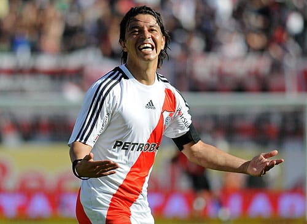
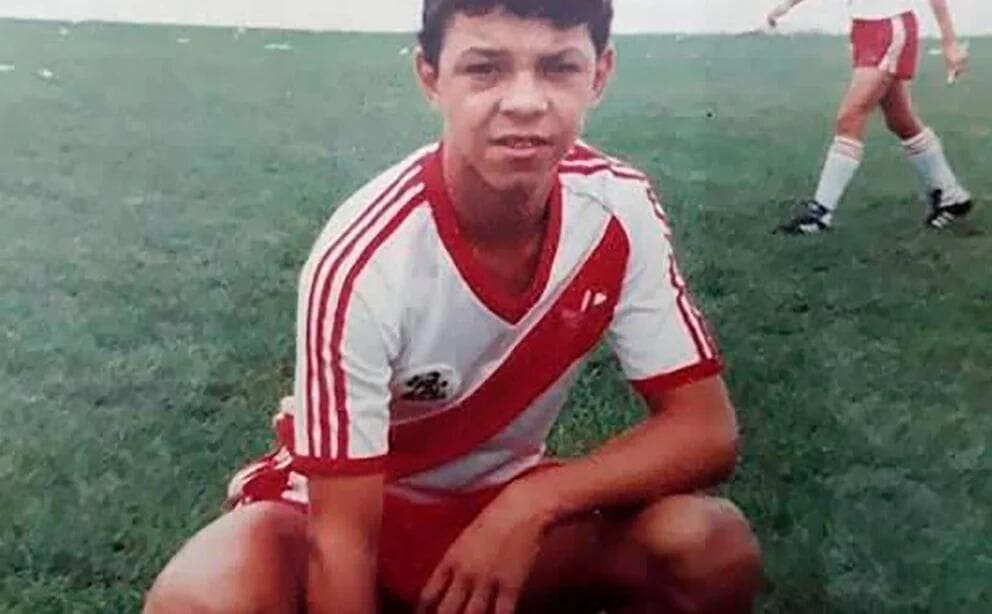
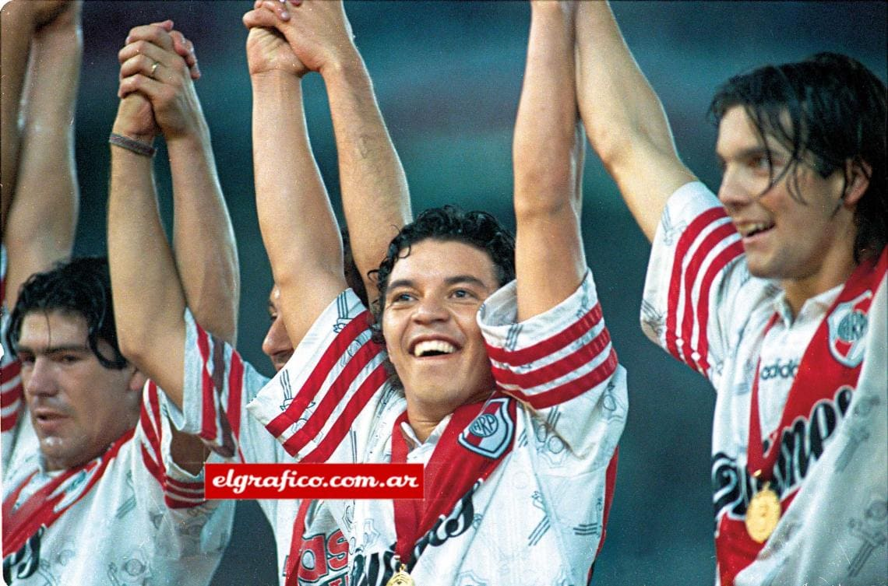
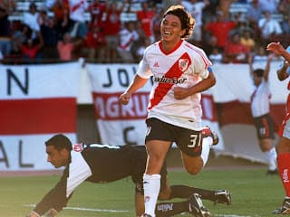
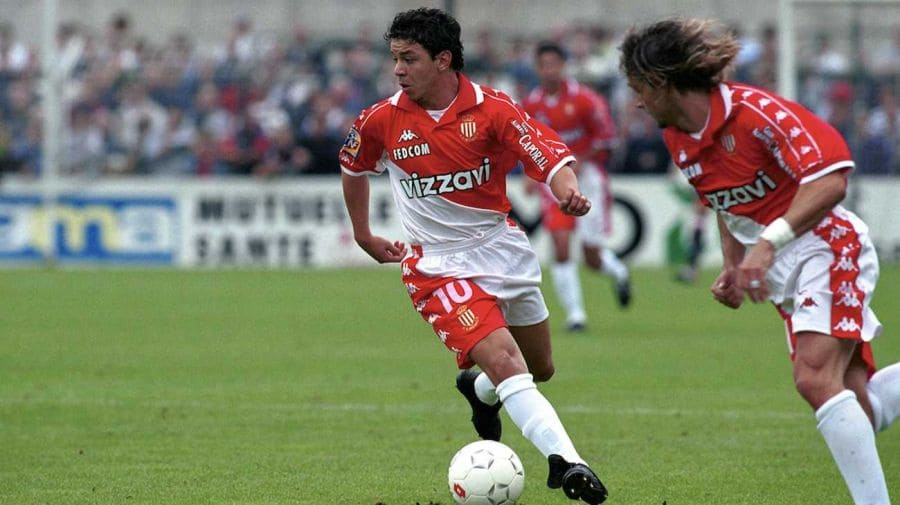
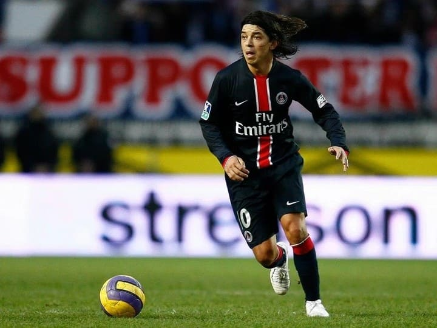
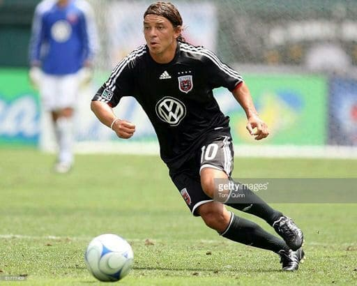
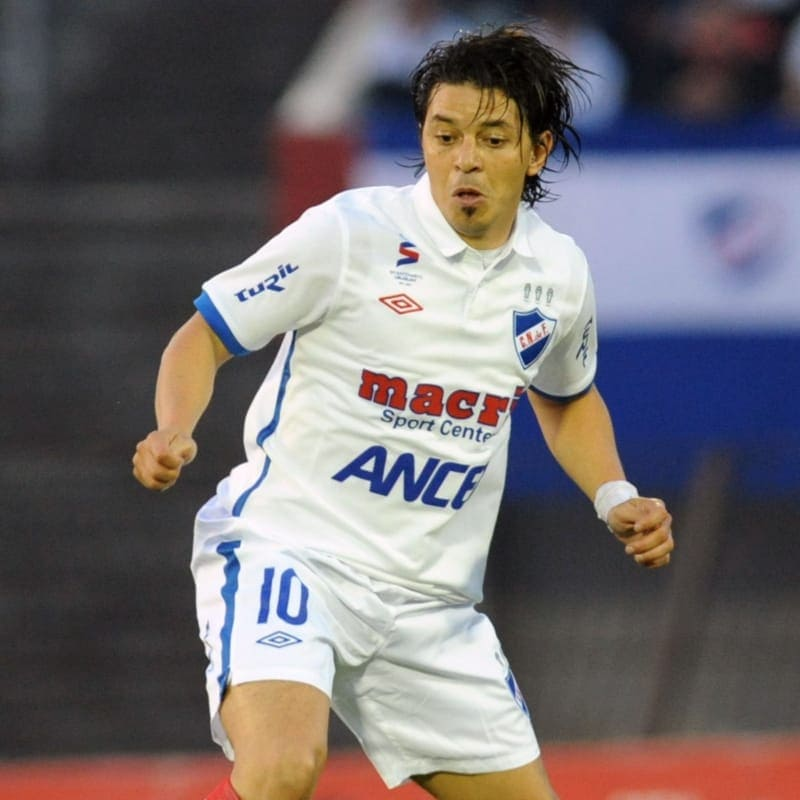

Jugador Profecional
Como jugador Jugaba como mediocampista ofensivo,el clasico "enganche",era versatil, encarador, gambeteador y tenia una gran pegada para la pelota parada. En algunas ocasiones era su mayor virtud dentro de la cancha y que podia cambiar un resultado de un partido
Inferiores
Gallardo debutó en la prenovena de River Plate a los doce años, en 1988, y tres años después en la reserva.El 18 de abril de 1993 debutó en la Primera División en un partido contra Newell's Old Boys que finalizó en una victoria por 2-0.El 11 de diciembre de 1994, Gallardo le anotó su primer gol a Boca Juniors
Primera Division
 En la primera division siempre jugo para el equipo River Plate dunante tres etapas.durante 6 años, la cual fue su primera etapa en el club. Gallardo tuvo otras dos etapas en el club «Millonario» las cuales fueron en 2003-06 y 2009-10 respectivamente. En River se consagró campeón en múltiples ocasiones, sumando en total ocho títulos. Estos fueron los Torneos Apertura de 1993, 1994 (campeón invicto), 1996 y 1997, los Torneo Clausura de 1997 y 2004, la Copa Libertadores de 1996 y la Supercopa Sudamericana de 1997. Se convirtió en uno de los jugadores más queridos por la hinchada riverplatense, destacando por ser figura en varios de los títulos que supo conseguir. Además de ser capitán y referente en varios de los planteles que integró.
Europa
 En 1999, tras consagrarse campeón de diversos torneos con River, Gallardo fichó por el A. S. Mónaco de Francia, donde rápidamente se convirtió en una de las figuras del equipo. En su estancia en el conjunto francés, el futbolista ganó el título de liga, la Supercopa de Francia y la Copa de la Liga.En AS Mónaco fue elegido mejor jugador de la Liga Francesa en el 2000.Tambien tuvo una experiencia en París Saint-Germain en el año 2007.su campaña en la Copa de la Liga de Francia, donde eliminó a Lorient, Montpellier, Valenciennes, Auxerre y le ganó la final a Lens para consagrarse campeón y sumar el cuarto título en Francia para Gallardo. En total fueron solo 31 partidos en una temporada y media, donde apenas pudo convertir dos goles.
MLS / Nacional
 En enero de 2008 fue transferido al D. C. United de la Major League Soccer.Donde Marcó su primer gol en el 5 de abril, en la victoria por 4:1 al Toronto F. C.Registró cuatro goles y tres asistencias en 15 partidos.Le surgieron lesiones y fue sometido a una operación de rodilla. El 13 de agosto de 2010 llegó a Montevideo para firmar contrato con el Club Nacional de Football de esa ciudad.En su primer partido como titular, Gallardo sufrió una rotura del tendón rotuliano.Volvió a jugar recién cinco meses después, el 27 de febrero de 2011, en una victoria por 1:0 contra Bella Vista. El futbolista entró al campo de juego al minuto 77.22.El 6 de marzo convirtió un gol después de un año, en un encuentro en el que Nacional venció a Miramar Misiones por 3:1. El 10 de junio de 2011 anunció su retiro concluido el campeonato uruguayo. Su último partido fue el 12 de junio contra Defensor Sporting en el Estadio Centenario. Gallardo ingresó al campo de juego al minuto 66 en lugar de Richard Porta y Nacional ganó 1-0, consagrándose así campeón.
Seleccion ARG
.jpg)
Gallardo jugó su primer partido en el seleccionado nacional argentino a los diecisiete años e integró los procesos de Daniel Passarella (Juegos Panamericanos 1995 y Juegos Olímpicos 1996) y Marcelo Bielsa (1998-2002), por lo que participó de los mundiales de Francia '98 y Corea-Japón 2002, aunque llegó lesionado al comienzo de ambos torneos. En el Mundial de Francia pudo jugar en las victorias argentinas frente a Jamaica, rCroacia e Inglaterra por penales.